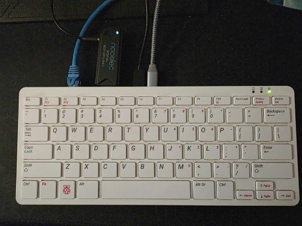
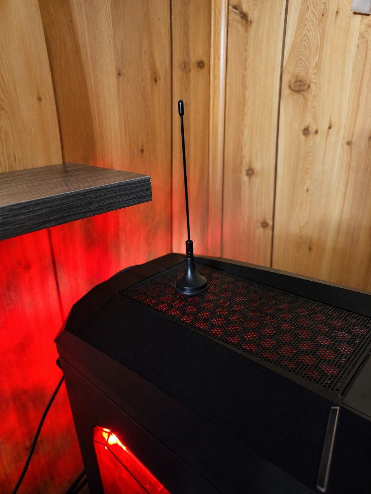
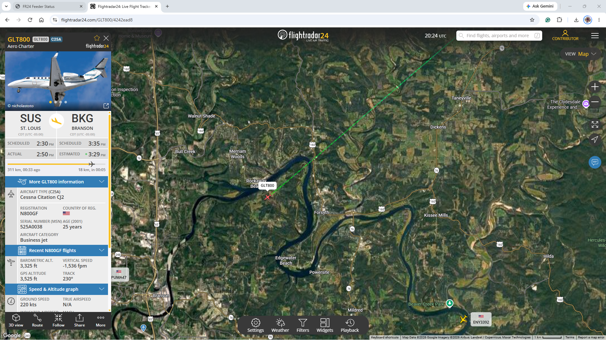

ELS field notes · Technology & Engineering
Working receiver · Exploration in progressSignals in the Sky
An aircraft passes overhead. What could we learn from the signals it sends?
With a Raspberry Pi keyboard computer, a USB radio receiver, and a small antenna, we are exploring the connection between the aircraft we see and the information we can receive.

Project observations recorded October 23, 2026. This is a project journal, not a live flight display.
Listening to information we cannot see
ADS-B stands for Automatic Dependent Surveillance–Broadcast. Equipped aircraft broadcast information such as position, altitude, and ground speed. Suitable receiving equipment can pick up those radio messages. [1]
Our project listens for aircraft broadcasts. It does not transmit radar pulses or send commands to aircraft.
Receive
The antenna and USB radio receiver pick up signals within reception range.
Decode
Software running on the Raspberry Pi interprets received messages as aircraft information.
Share and compare
The feeder sends data to Flightradar24. We compare local observations with the wider tracking service. [2]
A small setup, a real experiment
The computer is built into the Raspberry Pi keyboard. A Nooelec USB radio receiver connects to the antenna, while network and power connections keep the station running. The antenna is temporarily positioned indoors on top of a desktop PC.

Placement is part of the experiment. Flightradar24's antenna guide emphasizes a clear line of sight and vertical alignment. We have not yet measured the effect of moving this antenna. [3]
What we have observed so far
On October 23, our local feeder status showed an active receiver and a connection to Flightradar24. One captured status screen displayed:
| Receiver | Connected |
|---|---|
| Flightradar24 link | Connected via UDP |
| Aircraft tracked | 2 |
| Aircraft uploaded | 1 |
These recorded local status values document reception and data sharing at that moment. They do not establish our maximum range, continuous uptime, or a daily aircraft count.
A wider view of the day
At approximately 20:50 UTC (3:50 p.m. Central Daylight Time), the Flightradar24 feeder statistics page for October 23 displayed:
| Aircraft seen | 55 |
|---|---|
| Positions reported | 799 |
| Hits reported | 2,747 |
| Maximum distance | 19 nautical miles About 22 miles / 35 kilometers |
The daily aircraft counts shown in the same dashboard were 2 on October 20, 34 on October 21, 46 on October 22, and 55 so far on October 23. These are separate daily counts, not a count of unique aircraft across all four days. They also cover unequal observation periods, so they do not establish that reception improved.
These accumulated statistics answer a different question from the local status screen: the daily page summarizes activity over time, while the local screen captured how many aircraft were being tracked and uploaded at one moment. Hits and reported positions are not additional aircraft.
From the screen to the sky
After following GLT800 on Flightradar24, Roger stepped outside and observed the aircraft passing overhead. The map below captures the flight he was following—a connection between information on a screen and a discovery in the sky.

A useful distinction: seeing an aircraft on the public Flightradar24 map does not prove our receiver supplied its position. We still need to match entries in our local tracked-aircraft list with the flight we are investigating.
The next questions
- Which aircraft can we match between our local receiver and the public map?
- How does changing the antenna position affect reception?
- What changes when aircraft are higher, farther away, or behind terrain and buildings?
- How can we record observations fairly enough to compare two antenna positions?
Try keeping a short observation log: note the time, antenna position, and displayed aircraft counts. Change one thing at a time, then compare several observations rather than relying on a single busy moment.
Explore live aircraft tracking on Flightradar24 · Continue exploring technology
Your explorer's question: What have you seen overhead that made you wonder where it was going—or how we could find out?
Sources and project evidence
- FAA — ADS-B: Ins and Outs. Background on aircraft broadcasts and the information they carry.
- Flightradar24 — Build your own ADS-B receiver. Background on Raspberry Pi receiving and feeding.
- Flightradar24 — ADS-B antenna and location guide. Background on antenna placement.
Local status observations and photographs were supplied by Roger Callahan on October 23, 2026. The status table transcribes a captured screen; it is not connected to the receiver. The original Flightradar24 screenshot documents the flight Roger was following, with its on-screen credits retained. Flight tracking imagery courtesy of Flightradar24.com. Used with permission.